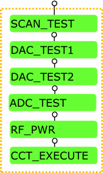
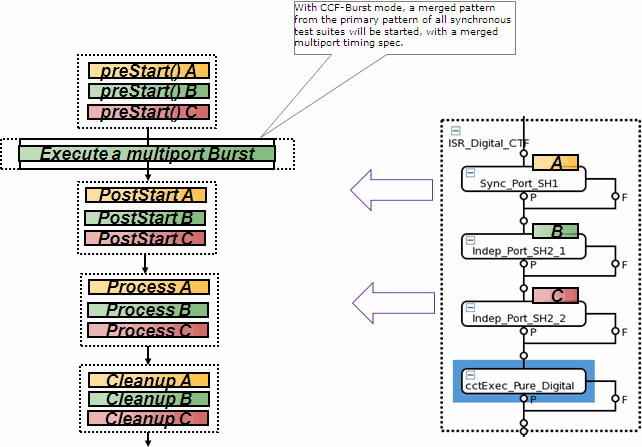
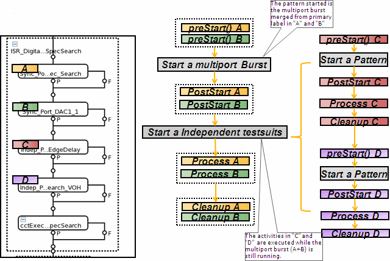
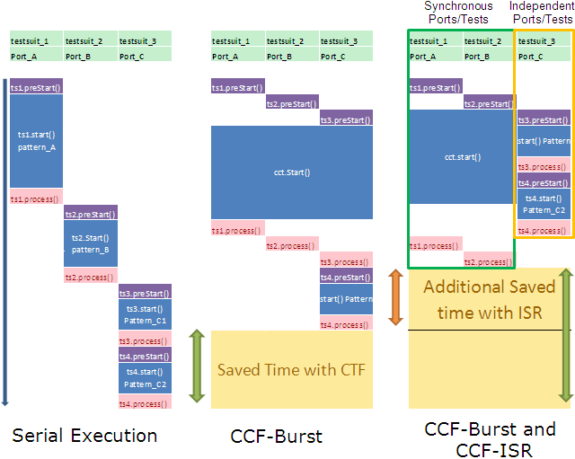

Concurrent test framework
The concept of concurrent test is to test independent blocks of a DUT at the same time by allocating separate ports to pins or groups of pins for each independent block. (Refer to Concurrent Tests (CCT) for details.)
Concurrent test framework(CCF) is to help combining multiple independent tests to one concurrent test execution while maintaining the structure of each test.
The execution of concurrent test is implemented in the format of concurrent test framework
block (CCF block). A CCF block is a group of test suites to be executed under the control of CCF.
The block can be executed in concurrent mode or serial mode. All test suites in the block use
test methods that are created based on the concurrent test method
template. The last test suite of a CCF block uses the test method
ccf_tml.CCExecution or ccf_tml.CCExecutionMultiGroup provided
by the framework.

Take the above CCF block as an example. The test method of each native test suite (SCAN_TEST, DAC_TEST1, ADC_TEST, RF_POWER) is coded following the concurrent test method template. When the concurrent test is enabled, each native test suite is added to a queue but not executed.
The built-in test method ccf_tml.CCExecution called in the test suite
CCT_EXECUTE will automatically schedule the execution of the test method in each native test
suite so that the tests can be fully or partially executed in parallel. After that, the queue is
cleared. If concurrent test is disabled, the native test suites will be executed serially.
The test method ccf_tml.CCExecutionMultiGroup will separate the test suites
into multiple sub-groups according to the sub-execution flags set in the test suites. The test
suites in each sub-group will be executed concurrently when the CCF block is executed in the
concurrent mode. The sub-groups are executed serially.
There are two execution modes in CCF to control the parallel execution, CCF-Burst mode and CCF-ISR mode. The two execution modes differentiate in the digital sequencer start.
- CCF-Burst mode: The patterns of independent blocks in the DUT are combined to a multiport burst and executed. The test suites, whose primary patterns are
combined to a multiport burst, are called "synchronized test suites" or "outer test
suites".
The following diagram shows the execution sequence of a CCF block with the CCF-Burst mode.

- CCF-ISR mode: Run the multiport burst pattern of synchronized test suites on the
synchronous sequencer and run the patterns of other test suites serially. This mode is based on
the "Independent Sequencer Run" of SmartScale cards.
This mode is only supported with SmartScale digital cards (PS1600 and PS9G). The test suites whose patterns are executed serially are called "independent test suites" or "inner test suites".
The diagram below shows the execution sequence of a CCF block with the CCF-ISR mode.

The key difference between CCF_BURST mode and CCF_ISR mode is that CCF_BURST mode only allows running one sequencer in the execution of a CCF block while the CCF_ISR mode allows multiple sequencer starts.
As shown in the figure below, CCF_ISR mode saves more test time and improves the test efficiency when the length of the pattern of each port differs much, because the independent sequencer can be started while the synchronous sequencer is still running. While in the CCF_BURST mode, another sequencer can only be started when the previous squencer of all ports stops.

CCF_ISR mode can also be used in the following conditions:
- when interactive operation, such as trimming test, needs to be concurrently executed with other tests
- when the primary setups of some tests cannot be combined and the sequencer needs to be stopped to switch the primary setup.
In order to use CCF to do the concurrent test, you need to prepare your digital setups according to the following conditions:
- Use multiport timing specification in each native test suite
- Define the level set per port in each native test suite
- Use the multiport burst label as the primary for each native test suite
CCF will merge the setups of the synchronized test suites for the concurrent execution. It will
- generate a multiport specification according to the multiport spec of each synchronized test suite and the assigned focused ports
- generate a new level equation/set based on the primary level of each synchronized test suite and the assigned focused ports or pins
- generate a multiport burst pattern for the synchronized test suites and the assigned focused ports or pins
- generate a merged analog set for different pins or ports in the synchronized test suites. For the same pin or port, CCF will merge it by appending the sequencer command (for analog pin) or the sequencer group (for RF port).
For detailed explanation, refer to the Merging the setups. When the test method
ccf_tml.CCExecutionMultiGroup is used to execute the CCF block in the
concurrent mode, the setups of each sub-group will be merged as in the CCF_BURST mode if the
testflow variable CCF_DevelopMode > 0. The merged timing, pattern and
analog set will be named as the value specified for the corresponding test method parameter plus
"_subgroup_<n>". If no level/timing setup merging is needed, the primary level/timing of
the last test suite in each sub group will be used.
To use the CCF, the test method of each native test suite needs to follow the CCF test method template. The template is different from the standard test method template when you create a test method class. It includes the following functions to set up the measurement conditions, process the test results and clean the measurement conditions:
addParameters(), init(),
createAnalogSetup(), createRFSetup(), createBurst(),
preStart(), postStart(), process(),cleanup() and
buildAnalogSetName().
Additionally, some APIs are specially defined to implement the test method with the framework. (See APIs defined for concurrent test framework.)
Binning
Multibin is mandatory for all test suites in a CCF block so that the correct bins can be set for any of the failing tests.
When a CCF block is executed in concurrent mode, the bin of the first failing test determines the bin the concurrent test falls in. The bin information for the failing test is taken from the Limits file. (See Structure of a TMLimits CSV file)
Functional changes
- Introduced in SmarTest 6.5.4
- SmarTest 7.1.3: Supports the merging of multi-port timing setups
- SmarTest 7.1.4: Supports analog sets defined in the analog setup file in TML 2.1.6
- SmarTest 7.2.0: Supports level setup merging in TML 2.2.0.
- SmarTest 7.2.1: in the patch 2, added the test method ccf_tml.CCExecutionMultiGroup in TML 2.2.0.